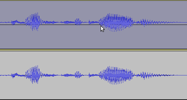

DC offset
Background
DC offset is an offsetting of a signal from zero. On the Audacity waveform it would mean that the waveform in default view appears not to be centered on the 0.0 horizontal line, as in the upper track in this image:
- 
The cause is almost always a fixed voltage offset somewhere in the audio chain before the analog signal is converted to digital values. For example, the voltage may be directly caused by a faulty soundcard, or may come from some other device that is attached to the card. Any offset is normally so small as to not be noticeable, but with defective or poor quality hardware it may become large enough to be a problem.
| You should check for and remove offset in any audio you are working with before editing it, even if the audio is not your own recording but an audio file you have obtained elsewhere. |
- A sound that has DC offset will not be at its loudest possible volume when amplified or normalized. This is because the offset reduces the headroom between the peak level of the audio and the maximum possible level without clipping. This problem can possibly extend to the mix as a whole, since a sound with DC offset and a sound without DC offset will have DC offset when mixed.
- DC offset can cause inaudible low level distortion. The distortion may become audible when effects that change the frequency content are applied, or when exporting the audio to a size-compressed format like MP3.
- DC offset can cause audible clicks where audio sections are cut and pasted together, and can cause a click on playback at the start and end of the track, even without editing.
- DC offset will become worse if the recording is amplified.
Removing DC offset
Audacity's Normalize Effect
Audacity's DC removal method performs a calculation to make the average positive and negative sample values equal. To perform removal, choose , with the option checked "Remove any DC offset (center on 0 vertically)". Uncheck the "Normalize maximum amplitude..." box unless you want to run Normalize as well (see Amplify and Normalize for what Normalize does and when to use it).
LADSPA dcRemove
An alternative method is to use the dcRemove plug-in in the swh LADSPA plug-ins bundle. Links to the bundle are on this page on the Audacity wiki. The plug-in dcRemove uses a High Pass Filter to remove the DC (0 Hz) component from the audio.
Cancel DC offset in sound devices on Windows
Newer Windows PCs may have a DC offset cancellation feature when recording from the built-in sound inputs. To check for or enable this:
- Right-click over the speaker icon in the , or click , then the "Recording" tab
- Right-click over empty space, show disabled and disconnected devices, then right-click over each device and enable it
- Right-click or select each device, choose "Properties" then look in the "Enhancements" tab
- If there is no "Enhancements" tab, look in the sound device's own control panel in "Hardware and Sound".
Limitations of offset removal
Audacity's DC offset removal method could potentially create a new offset and therefore a click in some rare cases. Two cases are noteworthy:
- where only part of the audio is offset, for example if absolute silence with no offset has been inserted into an offset recording.
- where the offset is not constant. Strictly speaking this is not DC offset, it is sub-sonic modulation or "slowly changing DC bias", but over a short time period it looks very much like DC offset.
In the case where some sections of the audio are clearly offset and some not, the solution in Audacity is to first carefully select each section of non-offset audio then use to split it a new track. Then remove the offset from the remaining audio, and paste the non-offset audio back. Use before split and paste if the non-offset audio is not absolute silence.
High Pass DC removal may well remove offset without adding new clicks if the offset is not constant.
| Note: Removing offset after the event does not reinstate the original loss of headroom. Without offset it would have been possible to record louder, so with greater dynamic range and greater signal-to-noise ratio. It is always preferable to try to find and fix the source of the offset in the hardware. Updating your sound device drivers might help, too. |